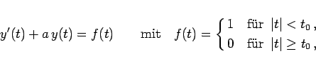
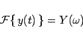
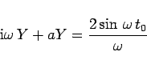
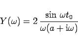
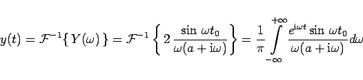

Inhalt Index DeskTop Bronstein

 Integraltransformationen Fourier-Transformation Lösung von Differentialgleichungen mit Hilfe der Fourier-Transformation
Integraltransformationen Fourier-Transformation Lösung von Differentialgleichungen mit Hilfe der Fourier-Transformation


|  | (15.100a) |
d.h. mit der Funktion f(t) der folgenden linken Abbildung, wird durch die FOURIER-Transformation
|  | (15.100b) |
in die algebraische Gleichung
|  | (15.100c) |
überführt, so daß sich
|  | (15.100d) |
ergibt.
Die Rücktransformation führt auf
|  | (15.100e) |
und
Die Funktion (15.100f) ist in der rechten Abbildung graphisch dargestellt.